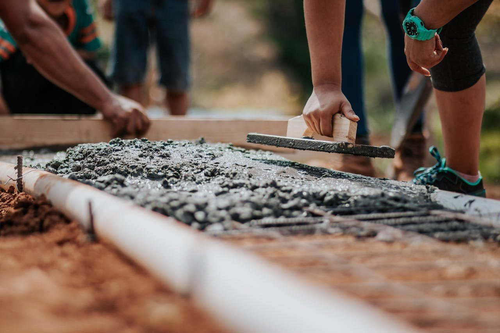
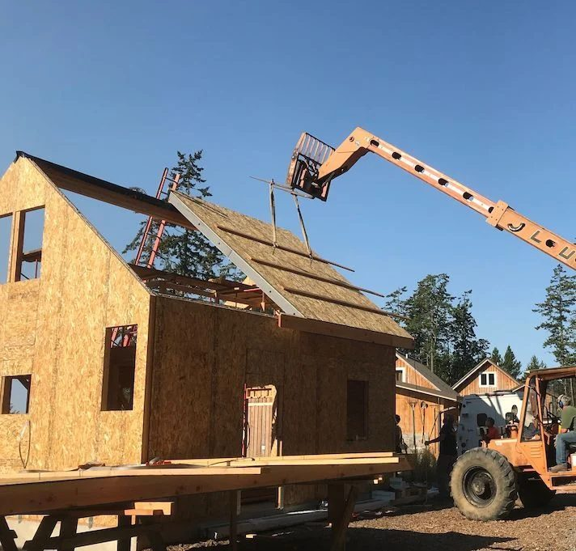
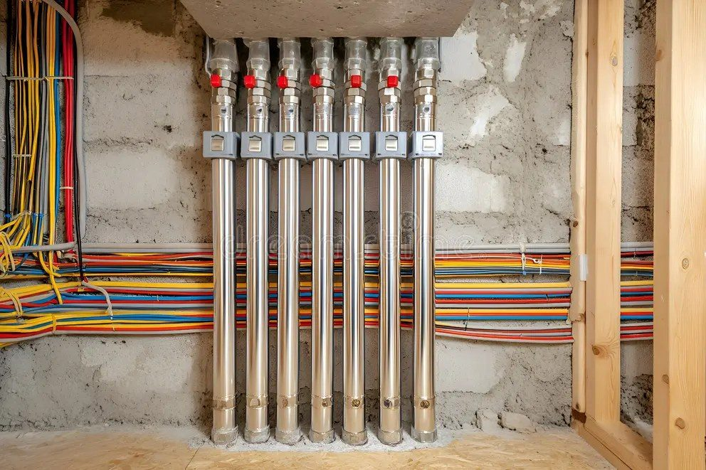
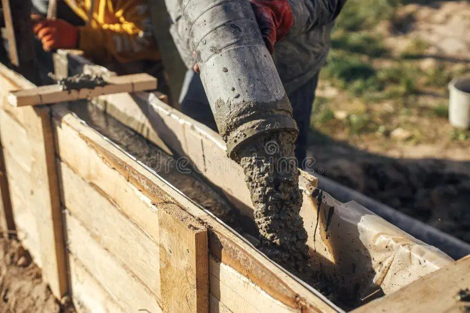
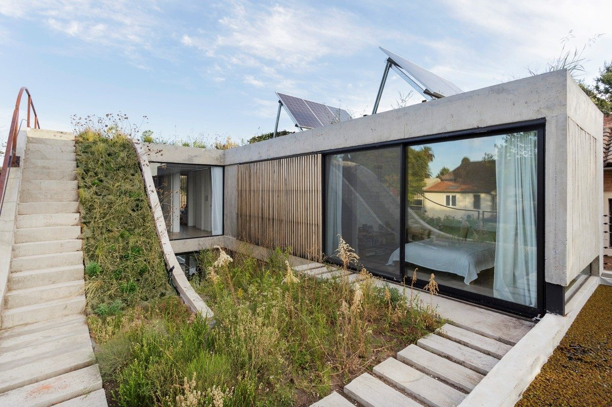

00
construimos tus sueños
En CES trabajamos con los mejores sistemas constructivos del mercado: construcción tradicional reforzada, steel frame, paneles ZIP e ICF (Insulated Concrete Forms). Elegimos el sistema que mejor se adapta a cada proyecto, clima, presupuesto y objetivo del cliente. Lo que no cambia es nuestro estándar de calidad, eficiencia y cumplimiento de plazos.
A continuación, el proceso constructivo paso a paso: desde la fundación hasta las terminaciones, con el mismo rigor técnico en cada etapa.




